EENG 383
Assembly Instruction for development board
Tools
| Side Cutters | 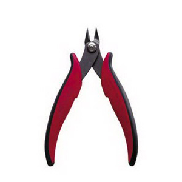 | Side cutters are great at cutting flush to a surface. This will be helpful when you trim the leads sticking through the PCB after soldering in the through hole components. The just-cut leads will fly away at a surprisingly high rate of speed. Always wear safety glasses when using your side cutters and aim the cut lead away from other people. |
| Safety Glasses | 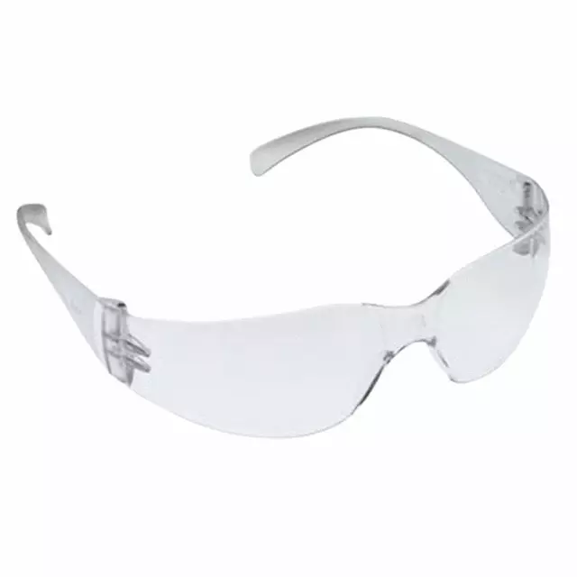 | Always wear safety glasses when cutting wire with side cutters and while soldering. Regular eye glasses are an acceptable substitute for the safety glasses in your kit. |
| Wire | 
| You will encounter two types of wire in our class, solid and stranded wire. Solid core is easier to work with when using solderless bread boards because it's stiffer, making it easier to insert into the bread board's plastic holes. However, solid core wire is much stiffer than stranded making it less useful in any application where the wires needs to be regularly bent or moved. The size of a wire's cross section is called its gauge. We will generally use 22 gauge wires, where 8 gauge is common in household wiring. |
| Wire Strippers | 
| The wire strippers will remove the outer layer of insulation on stranded and solid core. The cutters on the wire strippers are almost worthless; use the side cutters instead. You should take a few minutes to adjust the sliding stop on the strippers so that they cut through the wire insulation without nicking the wire. Do this by loosening the screw and bolt on the handle and sliding the screw and bolt towards the cutting jaw so that, when closed, the jaws of the cutter have an opening approximately the same side as the wire. Tighten the screw and bolt so that all future wires are stripped to perfection. |
| Tweezers | 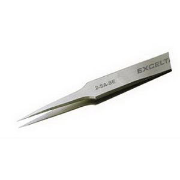 | The tweezers are great for handling those small surface mount devices. When I am placing parts I generally use two hands, one to control the open/close of the tweezers tip and the other as a resting surface for the tweezers. This helps me steady the tweezers tips. Keep the rubber protective cover for the tweezers as it will help preserve the sharp tip on the tweezers. |
| Solder Wick | 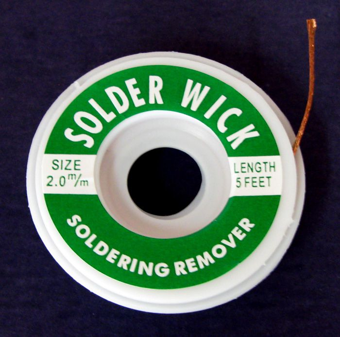 | Solder wick is used to pick-up excess solder left after reflowing your board using solder paste. When new, the wick is like a dry sponge. In order to soak up fluids, you need to initially wet a dry sponge. Similarly, you should melt a 1/4" length of solder into the end of the solder wick before using it (also called tinning the solder wick). When using a tinned solder wick, use the modestly silver section between the heavily tinned area and the un-touched copper solder wick. |
| Hemostat | 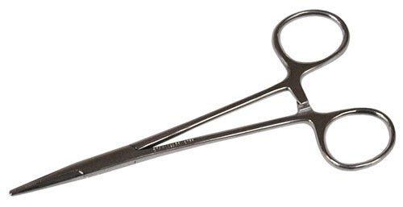 | Solder wick is great at picking up excess solder, but, being made of copper, is also an excellent conductor of heat. If you hold solder wick in your fingers you will burn them. Instead, cut a 2" length of solder wick (with your side cutters), and clamp the wick in your hemostats. The ratcheting mechanism will hold the wick fast while you tin it and then use it to pick up solder. |
Getting Ready
- Let's start by performing a simple test to make sure your PCB was
manufactured correctly - there is not a short circuit between your power
and ground rails on your PCB.
Use the bench digital multimeter to check the resistance between Vcc and
GND. Use the "Measure Resistance" procedure from the inLab and probe the
Vcc and GND pins next to the PIC footprint (shown in the image below).
You should read a very high (open circuit) resistance. If you are reading
1Ω or lower, stop the assembly procedure and get a new PCB - yours
has a fatal flaw. This said, I have yet to come across a PCB with a
short between the power rails, but there is always a first time for
everything.

- A good first step is to spread out your parts in a secure location. Group them like shown in this parts diagram. This will help more easily find the correct parts when you need them. Note that the parts diagram linked above is from an earlier revision of the board so the number of capacitors, etc. may be slightly different.
- Get a parts tray, the solder paste, the solder paste dispenser, a dispenser needle, the magnifying goggles, and a pair of tweezers. Solder paste is located in the small black refrigerator in Brown 328. Please make sure to put the solder paste back in the refrigerator when you are done. Also, please make sure you have at least 2 hours to sit down and complete soldering on the surface mount components. The surface mount soldering process cannot be interrupted.
- Organize your parts.
There are two types of parts, through-hole and surface mount. We
will be soldering all the surface mount parts using the reflow
skillet technique then use a soldering iron to solder the
through-hole components.
- Through-hole components have long pins on them that allow them to stick entirely through the printed circuit board. Leave all the through-hole components in your bag. We'll solder them later.
- Surface mount components have small metal wings or end caps that are designed to sit on the surface of the printed circuit board. Since they are generally very small they often come packages in paper tape. You'll have to carefully remove them from the tape using tweezers to remove the clear cover from the top of the tape.
- Remove the parts one-by-one from the parts bag and line them up on the Parts Diagram to verify that all parts are accounted for. Note any missing parts. If you are missing a component, check the back of the speaker - it uses its magnet to hang on to things. If you are missing one or two components, you should probably just continue with the assembly and hand-solder the parts later. Someone can help you with this if needed.
- Now, take all the SMT components from the Parts Diagram and place them in the black parts tray. Put all the through-hole parts back in the plastic bag for later. You may want to remove the SMT parts from their tape holders. I put the tape form capacitors in the tray to provide a quick reference to their values. The resistors have a labeling notation which makes it easy to identify the value of a particular resistor. Capacitors lack such markings making it easy to put the wrong capacitor in the wrong place.
- Load up the solder paste into the solder paste "gun".
- press the oval button on the top of the gun and pull the plunger all the way back into the body of the gun.
- Remove the black cap from the solder paste tube.
- Attach a black syringe needle to the dispensing end of the solder paste tube. Twist it securely in place. This takes a fair amount of force.
- Put the solder paste tube onto gun and twist it so that it securely attached.
- Squeeze the trigger until the plunger reaches the red gasket inside the solder paste tube.
- Gently squeeze the trigger until you get a small worm of solder paste out the end of the dispenser. You're ready to go at this point.
- Try dispensing a small dab of solder on all the two terminal device pads. Remember that the dab of solder paste should be about the size of a hamburger on a plate - no turkeys or Oreo cookies. On the ON/OFF switch don't worry if a little solder wanders its way onto adjacent pads. Don't worry about solder bridges, you can remove them later.
{kind=link}
{kind=link}
Place your parts on the board
- Place the smallest parts first and largest parts last as this helps you to avoid bumping a part that has already placed. The smallest parts are the 1206 discretes, followed by the ICs, and finally the largest are the mechanical parts. Time taken now to double check proper part location and part orientation will save you time and aggravation later!
- Place your parts working your way from the middle of the board to the edge, as again it will help you avoid bumping into a part you have already places.
- Place all horizontally-orientated resistors so that the printed text is readable from the bottom side of the board. Place all vertically-orientated resistors so that the printed text is readable from the right side of the board. I really don't care which side you consider the bottom or right, just keep resistor orientation consistent.
- If there is more than one part of a particular value (e.g. 10k resistors), then place all of them at the same time. This will help you account for all the parts and help you make sure that you do not put the wrong part in the wrong place.
- Put a small dab of paste on a pad To scale the solder paste on the pad should look like a large hamburger on a dinner plate. You should not have a thanksgiving turkey or an Oreo cookie worth of solder paste on that pad.
- If there are a lot of people wanting to use the solder paste, it pays to put a dab of solder paste on all the pads and lay the components on later. The solder paste will not dry out. If you have the equipment to yourself, you may instead, want to apply solder paste to all of the pads for a single component type (e.g. 10k resistors) then place just those components.
- Use your tweezers to pick up the small components and place them on the pasty pads board. I use two hands to place components on the board; one hand holds the tweezers and the other hand steadies the first. Resists the temptation to "squish" components down on the board. Nothing good will come from this practice. As you will later see, when you reflow the board, the components will naturally settle into a pool of solder.
- After putting down a bunch of the components my board
looked like this. Yea, it's far from perfect, but I didn't worry
because I knew that the volume of solder paste would reduce a lot
when it reflowed and that the surface tension of the liquid
solder will align the parts. To see the images in the table
below better, right click on the image and select "open image
in new tab" or your browser equivlent.
Explaintion of the picturesa b c d e f g 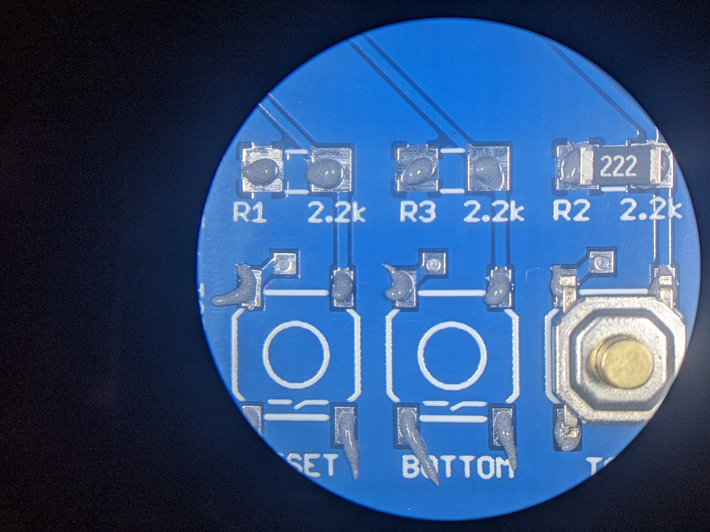 
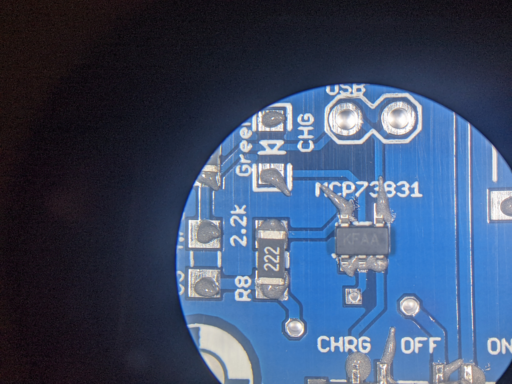 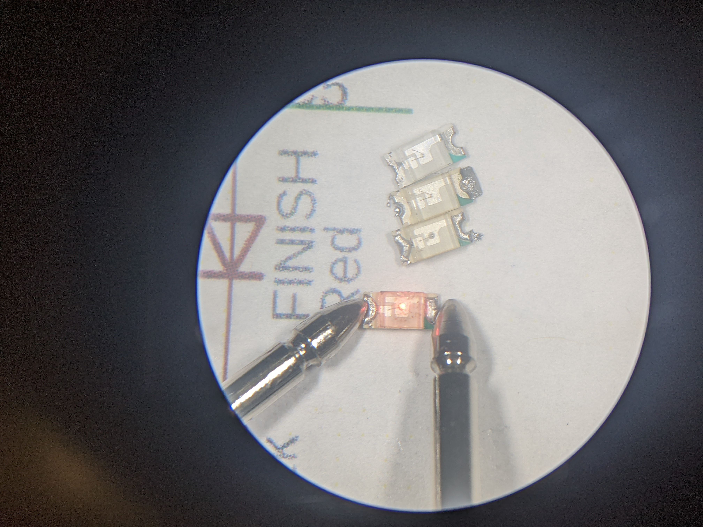 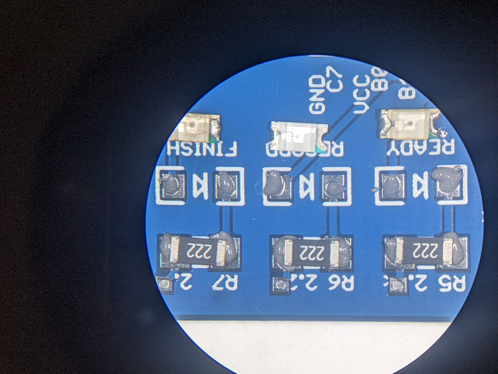 

- Put solder paste on every push button pad. Note the amount of solder paste on the pads.
- You can just put a "worm" of solder paste across the 3 pins of the SOT23-5 device. The surfae tension of the solder will pull it back to the pins. I had no solder bridges on this component after soldering.
- Position the SOT-23-5 device as carefully as you can, you will be rewarded later on when you do not have to de-solder the chip.
- All the LEDs look the same. How to tell the difference between colors? Use a DMM in diode checking mode to light it up. These are reused LEDs so they are in rough shape. Note the green marker on the LED is ALWAYS the cathode (negative end) of the LED.
- The arrow-shaped silk screen symbol for the LED tells you the cathode is to the right in this picture. I've lined up the LEDs so they are ready to put into place.
- the JST connector needs to be carefully placed to that the hidden terminals are alighed with the PCB pads.
- All finished and ready for the reflow skillet!
- Remember to double-check the orientation of the LEDs. You can identify the cathode by looking for the green strip on the edge of the lens.
- The color of the LEDs is important, please use the following
table as a guide.
Silk Screen Label Color POWER Green READY Yellow RECORD Green FINISH Red
Reflow your board.
In the next stage of the assembly process you are going to heat up your development board using a commercial-grade cooking skillet. Heating the solder paste will cause it to first dry out and then, when it gets hot enough, to transition into molten solder. The transition from gooey solder paste to molten solder is termed "reflow". Here is a nice time lapse of the reflow of a different development board - the process shown took about 6 minutes. In the video, I applied too much solder paste and created multiple solder bridges visible at the end.In order to properly reflow your board, the reflow skillet MUST START OFF COOL ENOUGH SO THAT YOU CAN TOUCH IT WITH YOUR BARE HAND. To determine if the skillet is cool enough, first put a single drop of water on the skillet. If the water drop does not evaporate after 10 seconds, you can safely go ahead a give the skillet a quick touch to test the temperature. Remove any water from the skillet surface before reflowing your PCB.
- Gently place the pasty PCB onto the reflow skillet. You can reflow more than one PCB at a time - sharing is caring!
- Position the air cleaner (sucky sucky tube) head over you PCB.
Be careful not to bump your PCB with the air cleaner tube.
Note that this picture shows an older version of the board.
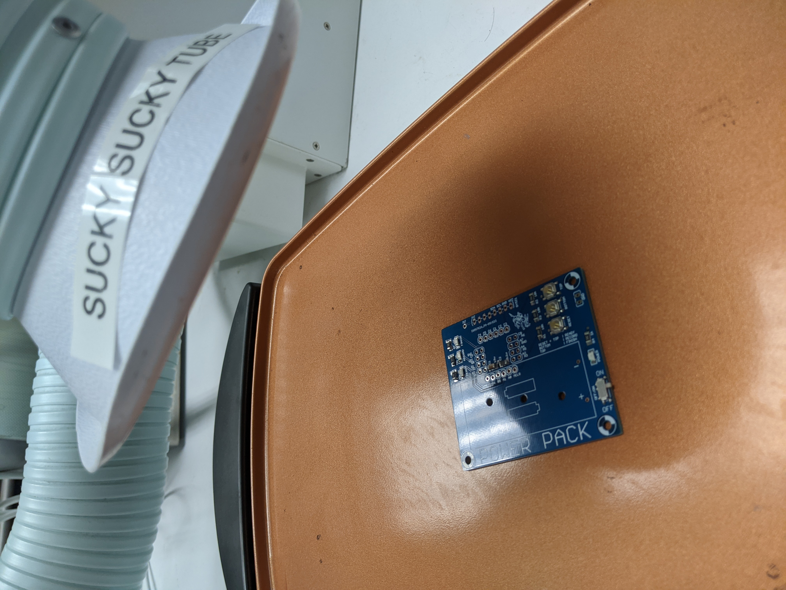
- Crank the skillet temperature knob all the way to 400 degrees.
- Under no circumstances should you use the Mantis to observe your board as its being reflowed as this will definitely damage this expensive piece of equipment!
- After 2 minutes the PCB will be warming nicely, the solder paste at this point will evened out across the pads as if the heat were somehow melting it.
- By 4 minutes the solder paste will have a dried to a baked consistency.
At about this time little whiffs of smoke may curling out from under the
PCB. While this initially freaked me out I have since come to the
conclusion that this is normal and does not damage the bottom side
solder mask.
Note that this picture shows an older version of the board.
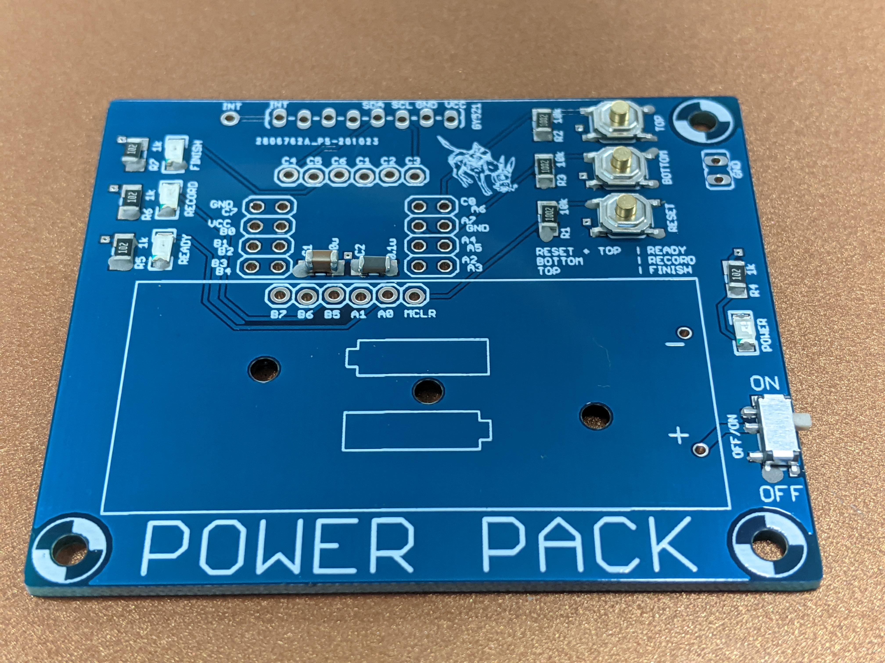
- After about 6 minutes some of the solder paste in the hotter regions or areas with little thermal mass started to reflow.
- In about 8 minutes all the solder
will have flowed. Before shutting off the heat, make sure that the all
the solder paste has transformed from a grey mess to shiny metal blobs.
Time to shut off the heat on the skillet. You may
have a few solder bridges that need to be fixed, but we'll get to that after
the board cools.
Note that this picture shows an older version of the board.

- Let the board sit for 2 minutes after you turn off the heat before sliding the board (with your hemostats) to the edge of the skillet that has a trough. Then carefully lift the board so that one side sits on the raised edge of the skillet and the other edge sits on the skillet surface. This allows air to flow under the edge of your board, speeding up cooling.
- Let the board sit in this way for 2 minutes then pick up the board with your hemostats and put your board on a cardboard surface (a notebook). Warning, the board may still be hot enough to burn you at this point.
- After letting your board sit for another 2 minutes or so, it should be safe enough to check the temperature by poking it with your finger - yea very scientific. When it's cool enough to pick up, proceed with the board touch-up.
Fixing Problems on Your Board
After your solder paste has reflowed and your board has cooled down enough to handle, you will need to perform a close visual inspection to identify improper solder joints. A solder joint is improper if it does not electrically connect the device terminal to the PCB (dry joint) or if the solder joint connects two or more adjacent device terminals (a solder bridge). It is also possible that you may have installed a component in backwards or swapped the location of two identically sized parts.Regardless of the problem, it's up to you to fix it. Here are some guidelines to fixing these types of problems.
Removing Solder Bridges
Solder bridges occur between adjacent device terminals (pins) when too much solder paste was applied to the PCB. When reflowed, this large mass of solder jumps (or bridges) to an adjacent pin making an improper electrical connection. Fortunately, solder bridges are easy to spot; just look for a mass of solder joining adjacent pins of an IC. Note, I have never seen a solder bridge form underneath an IC or discrete component.If you have solder bridges, then you will need to remove them. This will be one of the hardest technique to master when soldering, but some proper preparation greatly increases the chances of a successful outcome. You will need, a soldering iron, solder flux, and some solder wick.
Removing Solder Bridge - Step #1
Cut off a 1" to 2" portion of solder wick. Hold this piece of solder wick in your hemostats. Twist the wick once or twice around the tip of the hemostat so that the wick is being held firmly in place. Using the soldering iron, melt some solder onto the end of the solder wick. You want the solder to soak into the fabric of the solder wick. This is called tinning and is similar to wetting a new dry sponge before using it for the first time. When tinned properly your wick should look like the bottom piece of solder wick in the following image.

Removing Solder Bridge - Step #2
I like to have good lighting and magnification while desoldering, so I prefer to work under the Mantis or use the head loop magnifiers. Now, add a puddle of solder flux to the solder bridge and surrounding pins. This puddle serves two purposes, it helps keep the solder connection clean and more importantly, helps conduct heat from your soldering iron, through the solder wick, to the solder bridge.
 |
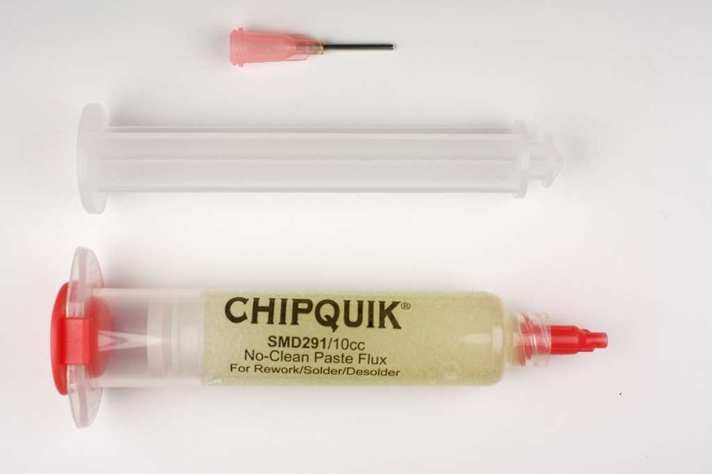 |
Removing Solder Bridge - Step #3
Now lay the tinned portion of the solder braid on the solder bridge. Next lay the side of the soldering iron on top of the solder wick over the solder bridge. It should look something like the following image.

Hold the iron in place do not move the wick laterally across a series of pins as you will bend the pins and rip pads off the PCB. In moments you should see solder flowing up into the braid. Don't hold the heat on too long or you'll remove all the solder from the joint. When you think that you have removed the bridge, lift the iron and braid together away from the PCB. Students generally underestimate the amount of time that they need to remove a solder bridge. I generally count to 6, slowly and then check. If you remove the solder iron without removing the braid, the braid will get stuck to the PCB. If this happens resist the urge to rip the solder wick off the board - you'll just rip the pins and pads off the PCB. Rather, remove a stuck solder wick by reheating everything up and only remove the wick when it lifts away easily.
Students often tend to focus on solder bridges when troubleshooting their development boards. However, too little solder can also be a major problem! Be sure to check that the pins of your ICs are firmly soldered down.
Adding Solder
Oddly one of the hardest problems to locate is an insufficient amount of solder at a solder joint. This typically occurs on IC and the USB pins. It occurs when you did not put enough solder paste on the PCB, or if you remove too much solder while removing a solder bridge.You can identify a pin that does not have enough solder paste by gently trying to move the pin with a small, sharp, firm object like the tips of you tweezers. If a pin wiggles when you press on it, that pin needs solder added to it.
Adding Solder - Step #1
Surprisingly, I add solder by using the solder paste gun. I deposit a small quantity of cold solder paste on the pin and pad. I don't worry if some of the paste touches adjacent pins, because the volume of the solder paste will greatly diminish when it's liquefied. Then I use a hot soldering iron to "reflow" this small portion of solder paste. It can sometimes be tricky to get the solder to stick onto the pin. If you are having a hard time, do not hesitate to just clean the tip of the soldering iron off, maybe add some solder flux, and try again.
Removing Components
If you put a component in the wrong orientation or swapped the location of two same-sized components, then you are going to need to remove one of more components.A soldering iron is almost always the wrong choice and instead you should use the hot-air rework station shown in the image below. The rework station consists of a metal box containing an on/off switch, an air (speed) setting and a heater setting. The hand unit has a plastic handle with a metal tip where the hot air comes out. Please note the position of the hand unit in the image below, the metal tip (and hot air) is angled up and way from the (flammable) desk! I emphasize this because it's easy to replace the hand unit improperly with the tip pointing at the desk. Under normal circumstances its pretty hard to set a desk on fire, but the hot air rework station is capable of doing just that. Enough said.
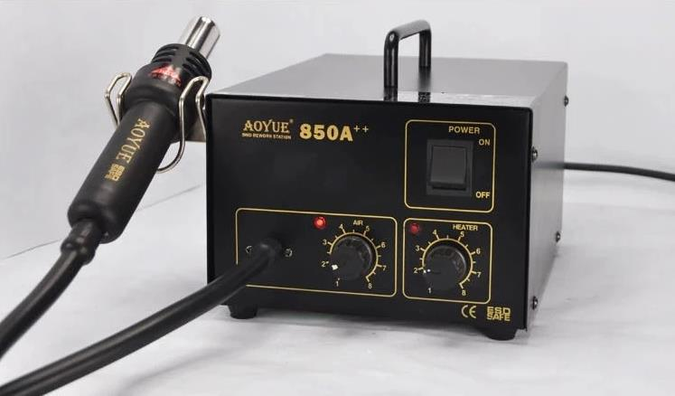
Removing Components - Step #1
Turn on the hot air station and set both the air and heater knobs to the number 5 setting. I like to place my board in such a way that it does not move. Remove anything flammable away from your board.
Removing Components - Step #2
Keeping the nozzle about 1-2" away from the surface of the board, move the tip slowly around the pins of the components that you are trying to remove. Avoid the body of the component and focus on the pins. Keep in mind that this hot air will be heating nearby components so be mindful of nearby small two leaded components that you may inadvertently reflow and try to aim the steam of hot air way from these components.
Removing Components - Step #3
In about 20 seconds or so the part will start to come free. Keep up the swirling the heat while, with the tweezers in your other hand, you lift the part up. If you fumble the part, don't worry, I have found that the pins will cool quick on their way down and generally the ICC will not stick to anything else. You can set the part down on the blue anti-static mat, it does not have enough heat to burn the mat.
Removing Components - Step #3
Turn off the hot-air rework station. The station will continue to run for a while as cools down the heating element.
Do not solder in the through hole components at this time, you will solder them in incrementally as you work your way through the following tests. Each test will require you to add one or more through hole parts, the introduction to the test will tell you which parts to add for that test.
Test #1 - Test the power subsystem.
Soldering:No through-hole components should be soldered to the daughter board in this test.
Procedure:
In order for the daughter board to power-up in the next step you need to insure that resistance between Vcc and GND is in the correct range and that the ON/OFF switch works correctly. To check this, perform the following operations.
- Connect a red and black probe to the benchtop digital multimeter (DMM). Make sure the red probe is inserted into the "V Ω" jack and the black probe inserted into the "COM" jack.
- Press the "Ω" button on the DMM to switch it into resistance measuring mode.
- Probe the Vcc and GND break-out header holes around the PIC as
shown in the image below - right mouse click and "Open in new tab"
to see a larger version of the image.
Start by placing the ON/OFF switch in the OFF position. When the ON/OFF switch is in the OFF position, there is no resistive connection between Vcc and GND. The only connection between Vcc and GND is through the capacitors soldered to the daughter board. If you measure the capacitance as shown below, you should get a value reasonably close to 10µF. Note that this picture shows an older version of the board.
A properly constructed daughter board will have a resistance value that will jump around in the MΩ range possibly negative as shown in the image below. Note that this picture shows an older version of the board.
If the daughter board resistance is low (less than 5Ω) then you have a short circuit between Vcc and ground. This is either the result of:- A solder bridge,
- Putting a component in the wrong place.
Test #2 - Install Test Firmware onto PIC18F25K22
Soldering:Solder in the the GND loop. Grab a discarded resistor and cut off the lead on one side (share the other side with a friend). Bend the lead in half, insert it into the daughter board so that the lead forms a loop about 7mm above the surface of the board. Solder it into place.
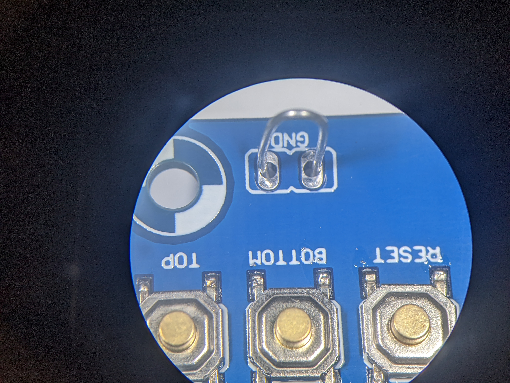
Procedure:
Download the daughter board test program to the PIC as follows.
- In the New Project pop-up (Step 1. Choose Project)
Categories: Microchip Embedded
Projects: Prebuilt(Hex, Loadable Image) Project
Next> - In the New Project pop-up (Step 2. Create Prebuilt Project)
Prebuilt Filename: navigate to /EENG383/lab/lab14/Lab14.X.production Device: PIC18F25K22
Hardware Tool: SN: BURxxxxxxxxx where x's are ID or your PICkit 3
Next> - In the New Project pop-up (Step 3. Select Project Name and Folder)
Project Name: Lab14.X.production.prebuilt (default)
Project Location: \EENG383\lab\lab14 (default)
Finish
***************************************************** Connecting to MPLAB Snap... Currently loaded versions: Application version............00.04.50 Boot version...................01.00.00 Script version.................00.04.48 Script build number............7acb7c9d66 Tool pack version .............1.7.510 Target device PIC18F25K22 found. Device Id Revision = 0x5 Calculating memory ranges for operation... Erasing... The following memory area(s) will be programmed: program memory: start address = 0x0, end address = 0x303f program memory: start address = 0x7740, end address = 0x7fff configuration memory Programming/Verify completeAfter programming, detach the SNAP programmer and then attach the development board to a PC, launch PuTTy, connect the the correct serial port, then type "?" to get a menu of commands that you will use to test the daughter board. You should see something similar to this:
------------------------------------------------- ?: Help menu Z: Reset processor z: Clear the terminal d: Program documentation ------------------------------------------------- i: Initialize SD card -/+: decrease/increase read address r: read a block of 512 bytes from SD card ------------------------------------------------- o: reset accelerometer A: read all the registers from the MPU6050 a: read acceleration data registers from the MPU6050 g: read gyroscope data registers from the MPU6050 W: Write an arbitrary MPU6050 register and value R: Read an arbitrary MPU6050 register ------------------------------------------------- b: test daughter board Buttons l: test daughter board LEDs -------------------------------------------------
Test #3 - Test Buttons
Soldering:You will solder the female headers that will connect the daughter board to the development board. There are 2 6-pin headers, 2 2x4 headers and 1 2-pin header. The main challenge in this step is to solder in the headers straight. By straight, I mean perpendicular to the surface of the daughter board.
I have the following method to be most effective.
- Put all the headers onto the development board where they belong

- Position the daughter board over the headers. The daughter board outline should align exactly with the daughter board. Getting the daughter board to drop on the pins will take some time. Getting the alignment correct is tricky. When a couple of pins catch, wiggle the daughter board while gently pressing down.
- Check the daughter board islevel with the development board, I pressed down gently to make sure that the daughter board was not leaningly slightly under its own weight.
- Solder 1 pin on the header. I would advise one of the end/corner
pins. Here are some images to help guide you to solder the header pins.
To see the images in the table below better, right click on the image and select "open image in new tab" or your browser equivlent.
Explaination of the picturesa b c d 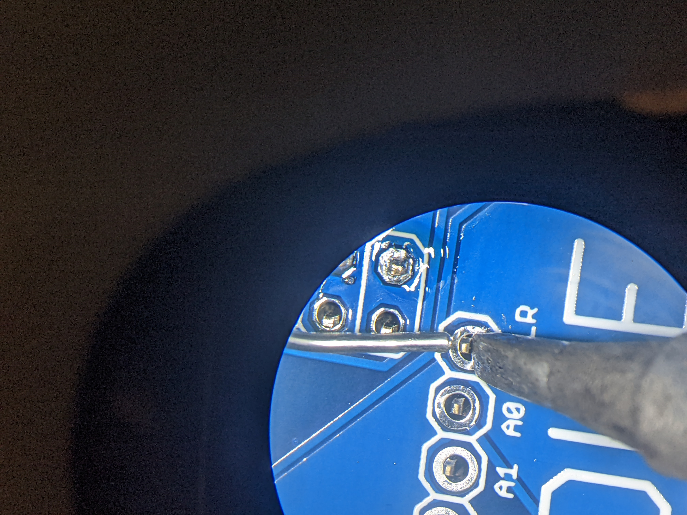 


- Align the soldering iron so that its chisel tip is flat against the PCB and pushing against the flat side of the header pin. Do not move the soldering iron from this position until you are completely done with the soldering operation.
- Bring in your solder. I link to dap a little solder on the tip of the iron at the start to get heat flowing. Once everything is toasty and solder is melting, press the solder against the header pin in little taps to add small increments of solder to the joint. You want your solder to look like a Hershey's Kiss. If you continue to add solder, you'll end up with an onion dome, yuck.
- Pull the solder away and leave the iron in place for 2-3 seconds to encourage the solder to wick down into the PCB barrel that holds the header pin.
- Don't forget to solder in the 2-pin header near the JST connector.
- Check that the daughter board is level with the development board before soldering more pins. If needed you can re-heat the soldered pin and make adjustments. Once you solder a second pin, it is very hard to make adjustments.
- When you've judged that everything is just right, solder the remaining header pins.
Procedure:
Connect the daughter board to the development board with everything powered off. Take your time to check the that all the male headers on the development board mate with their corresponding female header pins. It is easy to get this out of alignment.
Once connected, you should plug the development board into a PC using the USB mini cable. Make sure that the power-on LED on the daughter board illuminated. If it does not, immediately disconnect from the PC and check the troubleshooting tips below.
Once the green power-on LED on the daughter board illuminates, connect to PuTTy in the standard way. When you press "b" at the prompt, you will see the following message:
> b Press any to exit. BOTTOM BUTTON PRESSED BOTTOM BUTTON PRESSED TOP BUTTON PRESSEDEach time one or both button is pressed a message will appear in the terminal.
If this test fails, check that you have connected the daughter board to the development board so that all the male headers on the development board mate with their corresponding female header pins. It is easy to get the to out of alignment.
If this test still fails, check the connections in the figure below.
 |
|
Test #4 - Test LEDs
Soldering:No through-hole components should be soldered to the daughter board in this test.
Procedure:
When you press "l" at the command prompt, the PIC will test the LEDs. When pressed you should see the following:
> l Press any key to exit.The red, yellow and green LEDs associated with the Ready, Record and Finish indicators should all flash on and off at about 4Hz.
If this test still fails, check the connections in the figure below.
| 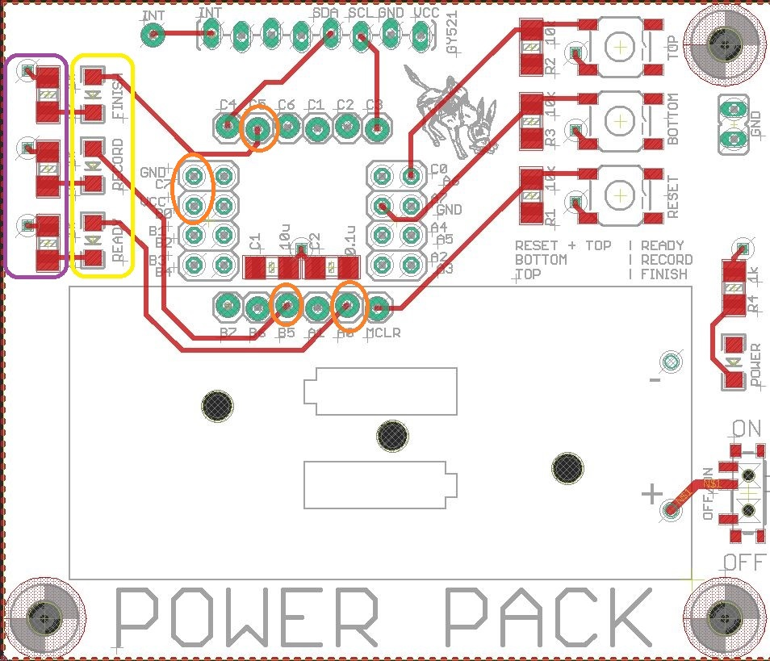 |
|
Test #5 - Test SD Card
Soldering:No through-hole components should be soldered to the daughter board in this test.
Procedure:
Insert a SD-card into the SD-card holder located on the bottom of the development board. When you press "i" at the command prompt, the PIC will initialize the SD card to operate in serial mode.. When pressed you should see the following:
> i CMD0, Reset Response: 1 CMD1, Init Response: 0 Block Length Response: 0 SD card initalized.After being initialized, you should type "r" to rest the read functionality of the SD card. When you do this, you will see something similar to the following. The actual display contents of the SD card will depend on what you last wrote.
> r Read from address: 0000:0000 3a c4 3d 08 3a 14 3b 7c 3c 50 3b f4 3c a8 3c 7c :▒=.:.;|.P.▒.▒.| 3c bc 3c 50 3c 04 3c bc 3c 18 3c 38 3b 9c 3a b8 .▒.P...▒...8;▒:▒You can use the "+" or "-" key to change the address. This is not necessary for this test. If this test fails, you have an issue with your SD card or SD card holder that should have been corrected in a previous lab. My guess is that you SD card was not inserted properly in the holder.
Test #6 - Test GY-521 board
Soldering:Unplug the development board from the PC.
Remove the daughter board from the development board.
You will solder the GY-521 to the daughter board. To do this, insert the GY-521 board through the top of the daughter board so that the outline of the GY-521 board is completely inside the outline of the daughter board. Try to position the GY-521 so that it is level with the surface of the daughter board. As with the headers, solder 1 pin of the GY-521, then inspect your work to make sure that the GY-521 is positioned perfectly. If it is not, reheat the soldered pin and adjust the position. When everything is perfectly position, solder the remaining 7-pins.

Procedure:
Reattach the daughter board to the development board. When you press "0" at the command prompt, the PIC will initialize the MPU-6050 accelerometer that is contained on the GY-521. When pressed you should see the following:
> o MPU6050 enabled.If you development board becomes unresponsive look at the troubleshooting tips below. Assuming the the MPU6050 is enabled, then type in "A". This will read all the interesting registers inside the MPU6050. Some of the values you read will be different from those shown below for a variety of reasons, but the WHO_AM_I register should equal 0x68.
> A 0d SELF_TEST_X 6e 0e SELF_TEST_Y 6f 0f SELF_TEST_Z 92 10 SELF_TEST_A c5 19 SMPLRT_DIV 00 1a CONFIG 00 1b GYRO_CONFIG 00 1c ACCEL_CONFIG 00 23 FIFO_EN 00 37 INT_PIN_CFG 00 38 INT_ENABLE 00 3a INT_STATUS 01 3b ACCEL_XOUT_H 03 3c ACCEL_XOUT_L 78 3d ACCEL_YOUT_H ff 3e ACCEL_YOUT_L c0 3f ACCEL_ZOUT_H 39 40 ACCEL_ZOUT_L b8 41 TEMP_OUT_H ed 42 TEMP_OUT_L 20 43 GYRO_XOUT_H ff 44 GYRO_XOUT_L b3 45 GYRO_YOUT_H 00 46 GYRO_YOUT_L d0 47 GYRO_ZOUT_H ff 48 GYRO_ZOUT_L 59 6a USER_CTRL 00 6b PWR_MGMT_1 00 6c PWR_MGMT_2 00 75 WHO_AM_I_MPU6050 68If you get the following list of accelerometer values, you have a bad GY521. You will need to remove the GY521 and solder in a new one. To remove the GY521 board I would advise using the hot air gun to heat up the back side of the daughter board on the pins of the GY521. While holding the daughter board, use a pair of hemostats to grab the GY521 and firmly/gently wiggle the GY521 out of daughter board. Do this slowly so as not to damage the traces on the daughter board.

If you are getting no response from the GY521, check the solder connections shown below.
 |
|
Test #7 - Test Battery
Soldering:No through-hole components should be soldered to the daughter board in this test.
You will not be given a LiPo battery until the lab TAs verify that your daughter board is properly configured. If you take it on yourself to find a LiPo battery and plug it in, I need you to read the following.
You will plug the battery into the JST connector that you soldered onto your daughter board. This connector is polarized, meaning that you can only plug the battery in one way - a good feature because you do not want to plug in the battery backwards and damage your development board.
Unfortunatly battery manufactures have not standardized which side of the connector to place the positive battery lead! The picture below shows the correct lead placement for our daughter board. If your battery leads are reversed then you will need to swap them before plugging in your battery to the development board. You can swap the battery leads by removing the leads from the JST connector and then re-inserting them into the correct positions. You might want to read this web page for more details.
Finally, our battery charger is setup to charge batteries at 150mAh and larger. Do not charge LiPo batteries with a capacity below 150mAh battery using our daughter board.